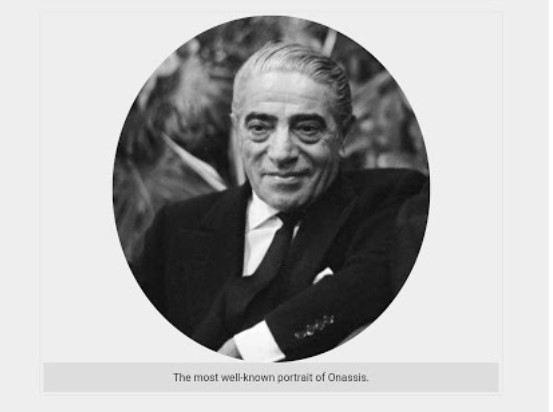

Aristotle Onassis
1906-1975
One of the richest people in the 20th century
Aristotle Socrates Onassis Greek: Αριστοτέλης Ωνάσης, romanized: Aristotélis Onásis, IPA: [aristoˈtelis oˈnasis]; 20 January 1906 –
15 March 1975), commonly called Ari or Aristo Onassis, was a Greek shipping magnate who amassed the world's largest privately
owned shipping fleet and was one of the world's richest and most famous men.

The following list is a time line of Onassis Life
- 1906- born in Karatas, Smyrna, Ottoman Empire.
- 1922- He left from Smyrna during the great fire of Smyrna in 1922.
- 1932- He went to Buenos Aires,Argentina and starts working as a telephone operator.
- 1939- He relocated to New York and started his shipping business.
- 1946- Onassis married Athina Livanos, daughter of shipping maganate Stavros G. Livanos and Arietta Zafrikakis, on 28 December
1946. The couple had become largly seperated by mid-1950s.
- 1950-1956- Onassis had success wailing off the Peruvian coast.
- 1953- In Monaco he started to purshase the shares of Monaco's SMBusing tax haven of Panama and finally take the control of
SMB.
Read more about Aristotle Onassis on Wikipedia